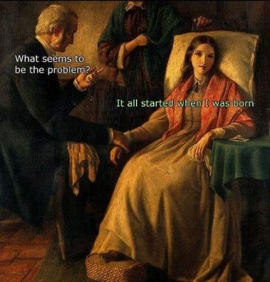

--Alan Watts
"Just when I thought I was out, they pull me back in."
--Mario Puzo
Sometimes The Mind-Tickler inspires more Ticked-Offs than Tickles. Hopefully that won’t be the case this time, but what follows may not be popular. So, if reading this makes you want to storm off angry, well, I get it, and it’s been fun hanging with you for a while anyway.
Pretty much everyone has accepted the idea that past traumas are stored somewhere in us, waiting in an unseen dark place for opportunity to spring out and make us suffer.
We’re told that the past is embodied, even encoded into our cells.
While waiting to somehow be “resolved,” before allowing us to move on to a contented life, this painful past rules and controls our lives.
Wow, that makes this “past” stuff some powerful voodoo, no?
Though if we actually looked with new eyes at that belief-bug swimming in the Kool-Aid, we might discover that it’s not only not there, but also really makes no sense.
First, because there’s tons of research that shows that what we call memories are actually just a few tiny, vague, split-second current-moment mental images, strung together by thought and concocted into a cohesive narrative. (No need to believe me. There's always Mr. Google.)
Turns out, no matter how real it feels, or how certain we are that we remember accurately, or how many people verify our tale…
no one remembers the actual past.
The science is very clear.
Memories are completely made up.
But even if this was not the case, and even if what we think happened really did happen,
then logically, the wonderful stuff that happened is also stored in the DNA, and also rules our present.
Which means it's not only our miseries that are formative.
Meanwhile we devote all our energy and attention to trying to fix traumas that don’t actually have the powers we attribute to them.
And it’s not like we haven’t given trauma work and therapy and sitting with feelings a really good long try. Yet here we are anyway, still thinking we're ruled by memories and pain and carrying them around forever.
Not to mention all that stewing, dissecting, validating and repeatedly summoning up the past- how exactly is that supposed to make things better?
And if it actually did improve things, there wouldn’t be any folks left who are still dealing with trauma.
Everyone would have therapized it all away.
So those approaches aren’t working. Under guise of “healing,” repeatedly rehashing and re-feeling, over and over and over, this focus is actually re-opening scabs and holding pain in place.
Which I’m pretty sure is the opposite of what we want.
So maybe we could be open to something different. If only because the pain-is-in-there-forever idea is pretty darn miserable.
What if it was possible to say, “OK, yes, this bad thing happened. And now it’s over. Now what? Moving on. Next brand new experience coming right up.”
Well that would be different, wouldn’t it?
And if, right about here, the mind screams outrage for this simple, “Now what?” question, we might consider why it’s so eager to hold on to a story that brings so much pain.
Why is it so completely uninterested in not hurting?
This may even be where objections about “bypassing” come up.
But bypassing can only be a problem if one buys into the Pain-Is-Lying-In-Wait story. Without that, it’s not “bypassing,” it’s just “feeling better.”
Which I'm pretty sure would be ok with us.
So maybe all this time, we've been freer of the past than we thought.
We might finally be allowed to shift focus, feel better, and move on to present-focused, rather than past-focused, life and experiences.
And we might finally be allowed to leave past trauma in the stuffy stagnant land of, “Maybe or maybe not, it's long ago either way.”
Which might be startling to a mind that likes to hoard and rehash its troubles and suffering.
But can still be amazingly free when we open the windows and let the breeze blow through...
Experiencing, alive,
and completely new
in every second.
Click here to watch Judy on Buddha at the Gas Pump
“We think that the world is limited and explained by its past. We tend to think that what happened in the past determines what is going to happen next, and we do not see that it is exactly the other way around! What is always the source of the world is the present; the past doesn't explain a thing. The past trails behind the present like the wake of a ship and eventually disappears.”
--Alan Watts
"The past has no power to stop you from being present now. Only your grievance about the past can do that. Die to the past every moment. You don't need it."
--Eckhart Tolle
"There is neither past nor future. There is only the present. Yesterday was the present to you when you experienced it, and tomorrow will be also the present when you experience it. Therefore, experience takes place only in the present, and beyond experience nothing exists."
--Ramana Maharshi
“Have a complete break with the past and see what happens.”
--J. Krishnamurti
